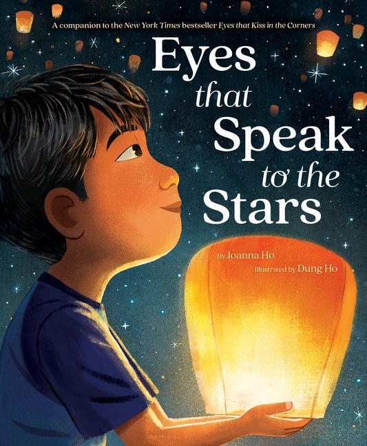
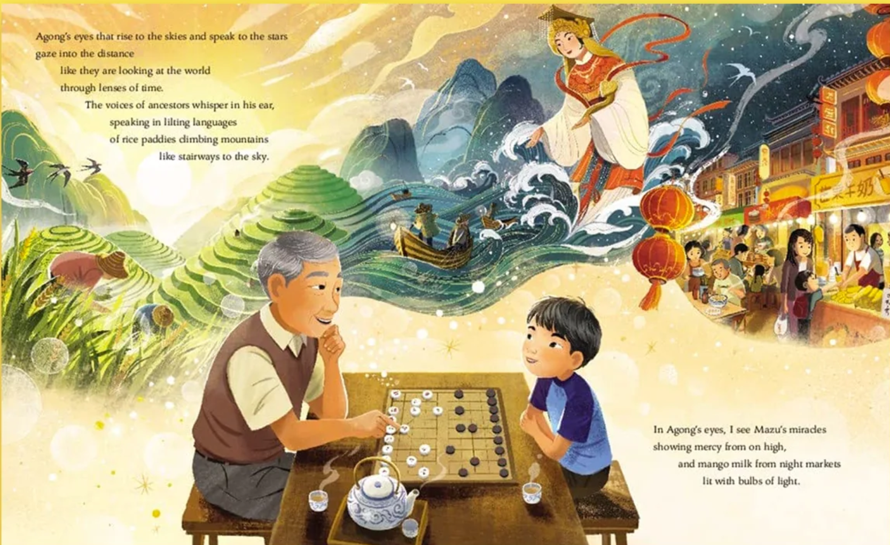
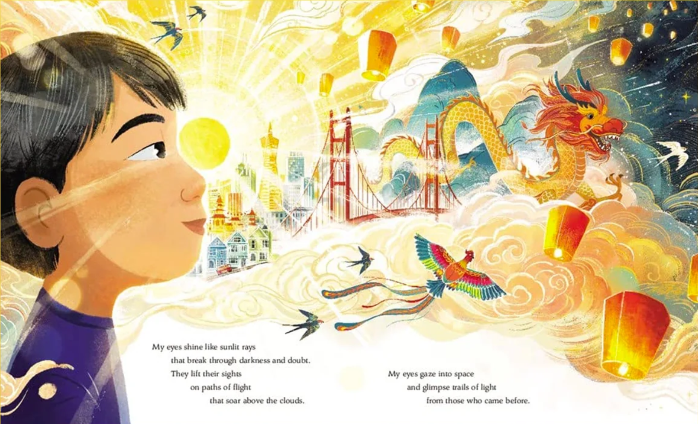

Synopsis
A young Asian American boy comes out of school one day with a frown on his face instead of a smile. A friend drew a picture and gave him two lines for eyes. The boy’s father, grandfather, and baby brother all teach him to be proud of his eyes. They speak to the stars, look at the world, shine through with stories, and connect him to his family.
Why read it?
This book is especially good for Asian American children who are confronted with racial stereotypes and imagery, especially to do with their eyes from an incredibly young age. I went to a rather progressive public school in Brookline, yet as early as I can remember, friends and classmates of mine would mock Asian people and students by pulling their eyes to become smaller. This book doesn’t ignore the fact that Asian eyes are different; it teaches children to embrace and appreciate their eyes, all the while connecting to different cultural and ancestral elements that may get lost through “assimilation.”
At a glance
- Form
- Picture book
- Age / grade
- Ages 4-8 · Pre-K-3
- Own Voices?
- Yes. Joanna Ho (Chinese American) writing an Asian boy’s story of heritage and self-worth; Dung Ho illustrates.
- Community
- Taiwanese / Chinese American boy and family
- Themes
- Identity, racism/stereotypes, family, pride, intergenerational love
- Watch / listen
- YouTube read-aloud